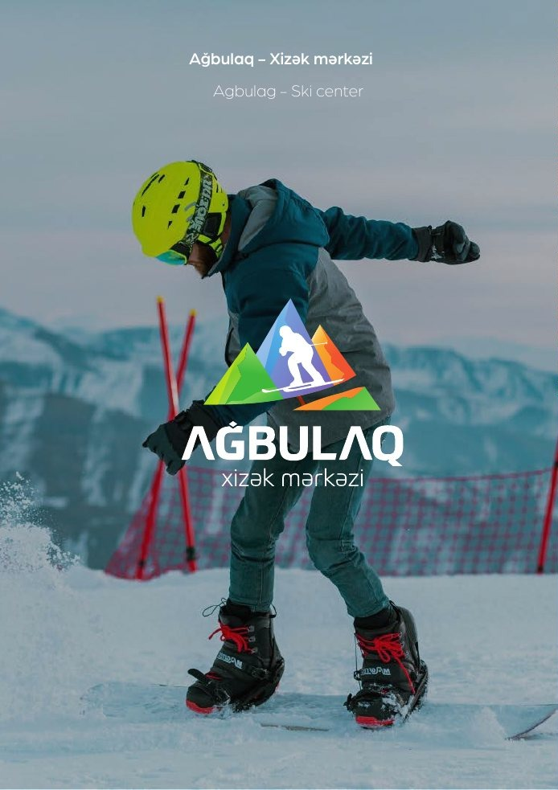
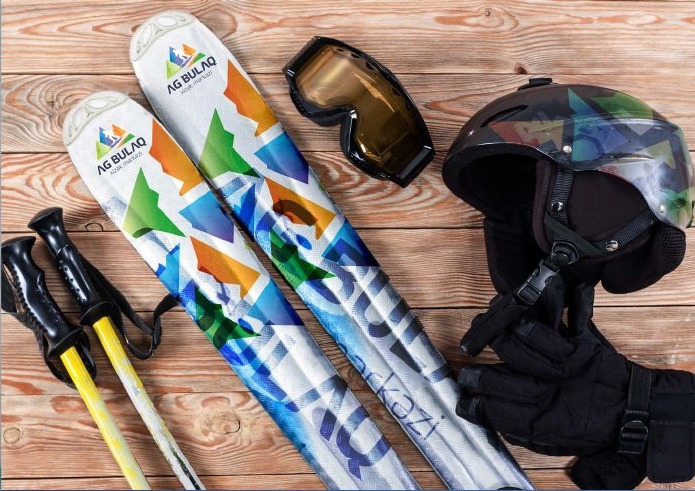
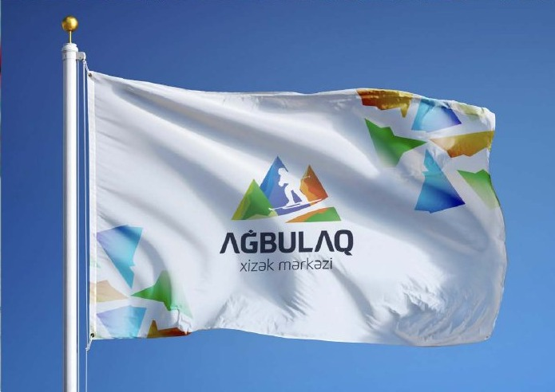

Fərqli ideya
Nişan brendin sahəsi və xarakterindən yaranan aydın konseptə əsaslanır.
Brand Identity
Xizək, təbiət və aktiv istirahət hissini çevik, müasir nişanda birləşdirən brend kimliyi.

01 / Ümumi baxış
Parlaq rənglər və hərəkət hissi yaradan forma həm idman geyimlərində, həm bayraq, avadanlıq və rəqəmsal materiallarda seçilir.
Xizək, təbiət və aktiv istirahət hissini çevik, müasir nişanda birləşdirən brend kimliyi.
Kimlik sistemi loqonun fərqli ölçü və materiallarda işləməsini, rəng və tipoqrafiyanın isə bütün təmas nöqtələrində eyni xarakteri saxlamasını nəzərə alır.
02 / Yanaşma
Nişan brendin sahəsi və xarakterindən yaranan aydın konseptə əsaslanır.
Kimlik rəqəmsal, çap və məkan tətbiqlərində rahat uyğunlaşır.
Rəng, tipoqrafiya və kompozisiya bütün materiallarda tanınmanı gücləndirir.
03 / Visual Direction



04 / Design System
Sadə, yadda qalan və müxtəlif ölçülərdə işlək forma.
Brend mövqeyini ifadə edən əsas və dəstək rəngləri.
Fərqli daşıyıcılarda eyni vizual nizam.
05 / Növbəti
Növbəti layihəGəmiqaya Holding↗